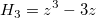

=y_0+\frac A{w\sqrt{2\pi }}e^{\frac{-z^2}2}\left( 1+|\sum_{i=3}^4\frac{a_i}{i!}H_i\left( z\right)| \right)")



Gram-Charlier-Peakfunktion zur Verwendung in der Chromatografie.

Number: 6
Names: y0, xc, A, w, a3, a4
Meanings: y0 = offset, xc = center, A=area, w=half width, a3 = unknown, a4 = unknown
Lower Bounds: w > 0.0
Upper Bounds: none
nlf_gcas(x,y0,xc,A,w,a3,a4)
FITFUNC\GRMCHARL.FDF
Peak Functions, PFW, Chromatography